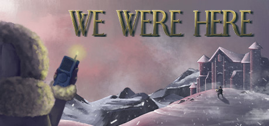

Review of the Franchise
|  |  |
 |
 |
| 7.5/10 | 8/10 | 8.5/10 | 8/10 |
Overall, the We Were Here Series is the best co-op puzzle game(s) I have ever played. I highly reccommend giving them a try. I will say do not cheat on the puzzles unless you are literally losing your mind. Once you solve them you will feel great, good brain exercise too. If you need hints or walkthroughs I reccommend just to send your partner a(n) screenshot(s) on discord to help you solve them.